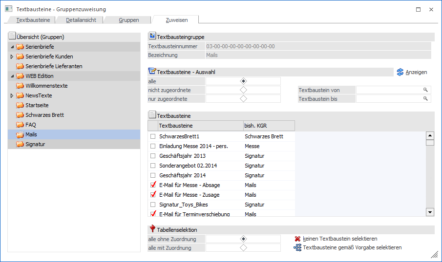
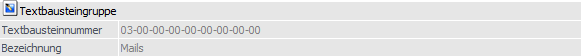
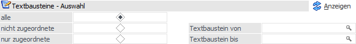
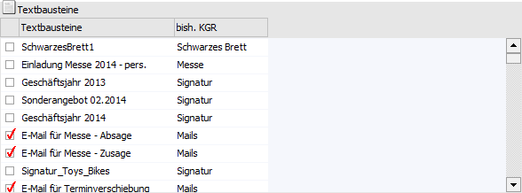
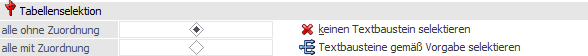

In dem Register "Zuweisen" können angelegte Textbausteine bestehenden Textbausteingruppen zugewiesen / zugeordnet werden.
Hinweis
Eine Änderung der Textbausteingruppenzuordnung wird erst dann vorgenommen, wenn der Button "Speichern" bzw. die Taste F5 ausgewählt wird!

Das Fenster ist in zwei Bereiche unterteilt. Auf der linken Seite wird eine Übersicht mit allen bereits angelegten Textbausteingruppen dargestellt.
Auf der rechten Seite können dann die Massen-Zuordnungen / -Zuweisungen durchgeführt werden, wobei die Zielgruppe der rechten Seite immer der aktuell ausgewählten Textbausteingruppe der linken Seite entspricht.
Textbausteingruppe

Ø Textbausteinnummer
An dieser Stelle wird die interne Nummer der ausgewählten Textbausteingruppe angezeigt.
Ø Bezeichnung
Hier wird die Bezeichnung der im linken Bereich gewählten Gruppe dargestellt.
Textbaustein - Auswahl

In diesem Bereich kann selektiert werden, welche Textbausteine in der Tabelle "Textbausteine" angezeigt werden sollen.
Ø alle / nicht zugeordnete / nur zugeordnete Textbausteine
An dieser Stelle kann definiert werden, welche Textbausteine in der Tabelle angezeigt werden sollen.
ü alle
Es werden alle
Textbausteine angezeigt.
ü nicht zugeordnet
Es werden all
jenen Textbausteine angezeigt, die nicht der ausgewählten Textbausteingruppe
zugeordnet sind.
ü nur zugeordnete
Mit dieser
Option werden nur jene Textbausteine angezeigt, welche der ausgewählten
Textbausteingruppe bereits zugeordnet sind.
Ø Textbausteine von / bis
Mit Hilfe dieser Selektionsfelder kann eine zusätzliche Einschränkung auf die anzuzeigenden Textbausteine vorgenommen werden.
Ø Anzeigen
Durch Anklicken des Buttons "Anzeigen" wird die Tabelle "Textbausteine" entsprechend der gewählten Selektion gefüllt.
Tabelle "Textbausteine"

In der Tabelle wird der Textbausteinname und die bisherige Textbausteingruppe angezeigt (sofern bereits eine hinterlegt ist). Mit Hilfe der Checkbox kann wiederum entschieden werden, welche Textbausteine bei Anwahl des Buttons "Speichern" der ausgewählten Textbausteingruppe hinzugefügt werden sollen.
Tabellenselektion

Mit Hilfe der Tabellenselektion kann die Zuweisungs-Checkbox der Tabelle schnell und einfach gesetzt werden. Hierfür muss zunächst eingestellt werden, welche Textbausteine betroffen sind. Anschließend wird mit Hilfe der Buttons die Checkboxen gesetzt bzw. entfernt.
Ø Zuordnung
Hier kann eingestellt werden, in welchem Umfang die Textbausteingruppen zugeordnet werden sollen:
ü alle ohne Zuordnung
Wenn diese
Option verwendet und der Button "Textbausteine gemäß Vorgabe selektieren"
angeklickt wird, dann werden alle Textbausteine, die in der Tabelle angezeigt
werden und bei denen noch keine Textbausteingruppe hinterlegt ist, aktiviert.
Zusätzlich bleiben all jene Textbausteine aktiviert, welche bereits der
Textbausteingruppe zugeordnet wurden.
ü alle mit Zuordnung
Wenn diese
Option verwendet und der Button "Textbausteine gemäß Vorgabe selektieren"
angeklickt wird, dann werden alle Textbausteine, die in der Tabelle angezeigt
werden aktiviert; unabhängig davon, ob bereits eine Textbausteingruppe
hinterlegt ist oder nicht.
Ø Textbausteine gemäß Vorgabe selektieren
Abhängig von der Zuordnung werden bei Anwahl des Buttons die Checkboxen gesetzt.
Ø keinen Textbaustein selektieren
Unabhängig von der Zuordnung werden bei Anwahl des Buttons alle die Checkboxen deaktiviert.